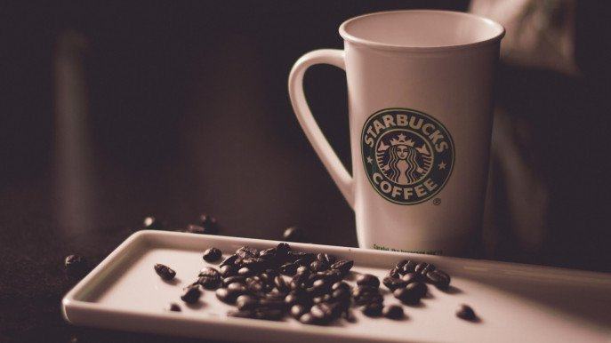

TOP 10 POPULAR COFFEE BRANDS
1.Starbucks

Founded in 1971 at Seattle, Washington
Everyone knows about Starbucks, thanks to their aggressive marketing and shrewd advertising techniques. But, does everyone like Starbucks coffee? The answer differs. The brand is not known for sourcing and roasting the best coffee beans. Most of their coffee beans are dark roasted, meaning, they taste bitter.
2.Dunkin' Doughnuts

Founded in 1950 at Canton, Massachusetts
Dunkin' is not as big a brand as Starbucks but they are second in line in the number of stores. But yes, the coffee Dunkin' offers is surely somewhat superior to Starbucks. For instance, Dunkin' does not have the signature burnt taste in coffee as Starbucks does. The coffee is also cheaper.
3.Costa Coffee
Founded in 1971 at London, United Kingdom
Costa coffee is one of the largest coffee chains in Britain. Having its presence in more than 31 countries worldwide, it has more than 3000 outlets serving coffee with around 18 thousand branches in the whole world. Costa coffees are medium roasted, which makes them smoother, sweeter, and nuttier.
4.McCafé

Founded in 1993 at Melbourne, Australia
Owned by McDonald's, McCafe is one of the leading coffee chains in countries like Australia and New Zealand. McCafé enjoys the benefit of having a vast presence (Because let's face it, McDonald's is everywhere!) As McDonald's expands worldwide, there is a decent chance of McCafé doing the same.
5.Peet's Coffee

Founded in 1966 at California, United States
Peet's coffee is said to be fairly stronger than the coffee Starbucks serves so it might not be for everyone. Peet's has a long history of serving darker roasted Arabica coffee. The coffee supposedly has a variety of flavours . If you are someone who cannot stand the burnt taste in coffee, maybe you will like Peet's. Also, the stores.
6.Nescafe
Founded in 1938 at Switzerland
If there is another coffee everyone has heard of, it is Nescafe. It's present almost anywhere in the globe. The instant coffee by Nescafe is unbeatable, not so much by taste as it is for availability. As for the taste, it sure is not the best instant coffee. Plus, the immediate rejuvenating feeling you get after a cup of Nescafe.
7.Bru Coffee
Launched in 1968 at India
Originated in India, Bru is perhaps one of the largest competitors of Nescafe is South Asia. Bru is not all coffee though, it is a graceful mix of coffee and chicory. With the authentic taste and regular launching of newer instant coffee options, Bru deserves to be on our list of top 10.
8.Gloria Jean's Coffees

Founded in 1979 at Australia
Gloria Jean's has definitely a more prominent presence within Australia with more than 450 outlets. But, that does not mean it's doing badly globally either. It has around a thousand stores worldwide and Bangladesh is one of them. About the coffee, it has got fairly good quality coffee but nothing that you would remember for a long time.
9.Tim Horton's
.jpg)
Founded in 1964 in Ontario, Canada
Being one of the oldest coffee brands, Tim Horton's cafes have more of a traditional setting. It is a fast-food chain with less customizable coffee options. And that is exactly why so many people adore the place. If you are someone who prefers their coffee with simple sugar and cream, you might love what Tim Horton's has to offer. And, they have doughnuts!
10.Folgers
.jpg)
Founded in 1966 at California, United States
Folgers is one of the most iconic coffee brands in the United States. The brand is well known for their ground coffee and is thought to have revolutionised the idea of it as well. The coffee is not extraordinary in its taste, maybe mediocre at best. But, if brewed properly, you can get a modest cup of coffee. Besides, if you cannot afford anything better, Folger's is not bad at all.
Social Media